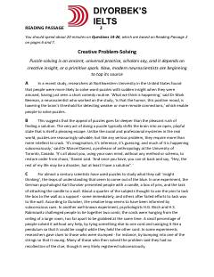

CPIjodiy muammolarni yechishda miya faoliyati va tushuncha (insight) jarayonlari haqida ilmiy tahlil.
Ushbu matn ijodiy muammolarni yechish jarayonida miya faoliyati va tushuncha (insight) mexanizmlarini o'rganuvchi ilmiy tadqiqotlarni tahlil qiladi. Unda ijobiy kayfiyat, hazil va miyaning diqqatni jamlash qobiliyati muammolarni hal qilish samaradorligiga qanday ta'sir ko'rsatishi haqida so'z boradi.